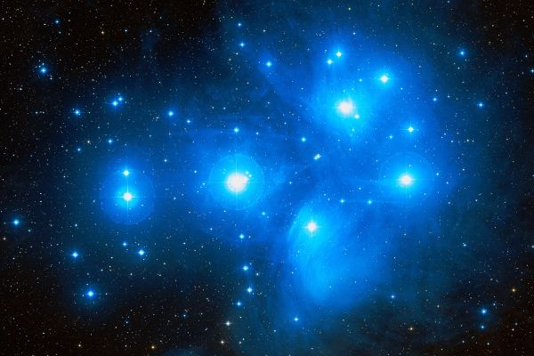
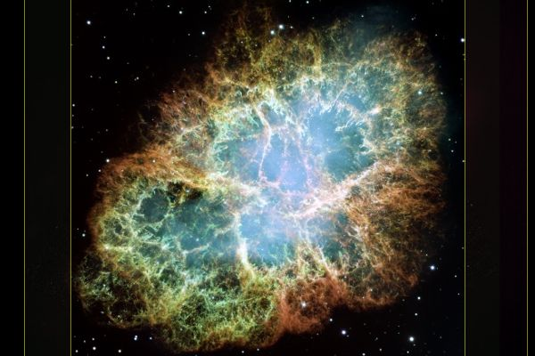

Латинское название: Taurus
Телец - бык, в которого превратился влюбленный Зевс, чтобы похитить Европу. Украв Европу, он перевез ее на спине через море на остров Крит.
Часть созвездия, на звездных атласах соответствующая голове быка, яркая и интересная: тут тебе и астеризмы Плеяды, и Гиады, и яркий огненный Альдебаран - а остальная заполнена редкими слабыми звездочками. Это понятно: тело быка находилось под водой, когда он переплывал море, а голова возвышалась над волнами.
Плеяды (M45) - рассеянное скопление, хорошо известное с самых древних времен: некоторые исследователи верят, что десятки, а возможно, и сотни тысячелетий до нашей эры древние люди выделяли на небе эту группу звезд.
Плеяды легко различимы невооруженным глазом даже в городе, они просто "бросаются в глаза" как маленькое искристое облачко: разглядеть в нем можно 5-6 звезд, зоркий наблюдатель увидит больше десяти, в бинокль - больше, в телескоп - еще больше... Плеяды - большое скопление: по оценкам, в нем около трех тысяч звезд. Преобладают молодые горячие голубые звезды, но есть и звезды других типов, например, "недозвезды" - коричневые карлики, и звезды-покойники - белые карлики.
В настоящее время Плеяды погружены в газо-пылевую туманность, и на фотографиях подернуты голубой вуалью.
Крабовидная туманность (M1) - объект интереснейший и ее изучение принесло великую пользу астрономии!
В 1054 году в созвездии Телец произошла вспышка Сверхновой, зафиксированная в летописях китайских астрономов. Сброшенная оболочка звезды стремительно расширялась, создавая волокнистую туманность, которая была впервые обнаружена в середине 18 века.
В центре туманности находится остаток Сверхновой - пульсар, работающий во всех диапазонах электромагнитного излучения. Физически это нейтронная звезда, одна из первых открытых астрономами. Сама туманность тоже светится в различных диапазонах - от теплового до рентгеновского. Природа и детали излучения - объект внимательного исследования.
